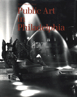

<body bgcolor="#FFFFFF" text="#000000" link="#0000FF" vlink="#CC0000" alink="#CC0000"><center><hr width="350" size="1" align="center" noshade>A fascinating history of public art in Philadelphia narrated throughout with surprising anecdotes, biographical sketches, and more than 400 illustrations<hr width="350" size="1" align="center" noshade><p><a href="https://cdcshoppingcart.uchicago.edu/Cart/ChicagoBook.aspx?ISBN=9780877228226&&PRESS=temple" target="_top">Buy this book!</a> | <a href="https://cdcshoppingcart.uchicago.edu/Cart/Cart.aspx?PRESS=temple" target="_top">View Cart</a> | <a href="https://cdcshoppingcart.uchicago.edu/Cart/Cart.aspx?PRESS=temple" target="_top">Check Out</a></p><p></p></center><!--none//--><h1>Public Art in Philadelphia</h1>
<H2>Publication of this book was made possible by a grant from The William Penn Foundation</H2>
<h3>Penny Balkin Bach</h3>
<P>cloth 0-87722-822-1 $29.95, Dec 92, <FONT COLOR=#990033>Out of Stock Unavailable</FONT>
<BR> 288 pp
8x10
450&nbsp;halftones
</P><h3 align="center"><P><font color="#996633">National Gold Ink Pewter Award,
1993</font></P>
<P><font color="#996633">Philadelphia Book Clinic Certificate of Award,
1993</font></P>
</H3>
<BLOCKQUOTE><I>"...a well-illustrated, information-packed exploration of the city's unexcelled collection of accessible artworks, and of the hopes, ideals and causes that have brought them into being...[a] good guide to both familiar pieces and some you may have never heard about."</I>
<br>&#151<b><I>The Philadelphia Inquirer</I></b><I></I></BLOCKQUOTE>
<p>"Public art is a manifestation of how we see the world&#151the artist's reflection of our social, cultural, and physical environment." Thus, Penny Bach introduces this fascinating history of public art in Philadelphia, narrated throughout with surprising anecdotes, biographical sketches, and more than 450 illustrations. She explores the artistic, historical, political, and social trends and events that caused the city to acquire such a rich and diverse collection of public art. Philadelphia's tradition of public art reveals the origins of our cyclic longing for public expression: the spiritual roots of Native American culture, the utilitarian needs of the colonial period, the civic glorification of American patriotism, the planning instincts that emerged from the industrial era, and the pursuit of originality and invention in the twentieth century. Guiding the reader through a chronological tour of the city's aesthetic holdings, <I>Public Art in Philadelphia</I> provides a sort of history of American monumental art in microcosm and offers a way to appreciate the public art we encounter, whether it is cast, carved, built, assembled, or painted.
<p>As the nation's first capital, Philadelphia began early to commemorate heroics figures, popular leaders, patriotic ideals, and historic events. From Lazzarini's marble figure of Benjamin Franklin to Pinto's <I>Fingerspan</I> in Fairmount Park, form Laurel Hill Cemetery's celebrated sculpture garden to Lipchitz's controversial <I>Government of the People</I>, and from William Penn atop City Hall to the colorful murals by the Anti-Graffiti Network, public art has continued to enhance, define, and challenge Philadelphians' perception of their city.
<p>With perhaps the largest collection of public sculpture in the world, Philadelphia's art acquisitions span the history of the United States. Bach examines the gradual transformation over three centuries of style, theme, and reception of statues, murals, and other art forms. Shorter thematic essays make "connections" between works, ideas, artists, and civic missions. A catalogue focuses on more than 200 individual works, noting the materials, dimensions, location history, and commissioning process, and suggesting the vast range of public art. The armchair tourist, for example, can visit <I>Dickens and Little Nell</I> in Clark Park, the John Wanamaker's <I>Eagle</I>, the <I>All Wars Memorial to Colored Soldiers and Sailors</I> in Fairmount Park, or the <I>Julius Erving Memorial</I> on Ridge Avenue, among many others. A set of maps encourage readers to view the works in their public context.
<p><I>Public Art in Philadelphia</I> offers a unique tour of both the familiar and the overlooked treasures that give meaning to the public environment, that reconnect art to daily life, and that remind Philadelphia's visitors and residents of what was considered important to previous generations.
<BR>&nbsp;<h2>Contents</h2><P>
<p>Foreword
<br>Preface
<p>1. Patriotism and Pride: To 1835
<br><I>Native American Traces: Origins of a Public Art &#149
Practical Arts for the New World: The Craft Tradition &#149
After the Revolution: An American Portrait &#149
Meet You at the Eagle &#149
Utility and Beauty: Civic Improvements and the Artist &#149
A Public Figure: Franklin</I>
<p>2. Sculpture and the Landscape: 1836-1876
<br><I>Laurel Hill Cemetery: Philadelphia's First Sculpture Garden &#149
The Growth of Fairmount Park: The Fairmount Park Commission and the Fairmount Park Art Association &#149
Monuments and Memorials &#149
The Civil War Years: From Parlors to the Public &#149
The Centennial: 1876 and the International Influence</I>
<p>3. Monuments to American Ideals: 1877-1910
<br><I>Casting an American Art: From Marble to Bronze &#149
Renewed Patriotism: Ceremony and Celebration &#149
Arts and Crafts: Another American Ideal &#149
Three Generations of Calders &#149
A City Beautiful: The Parkway Plan</I>
<p>4. Realism to Abstraction: 1911-1958
<br><I>Statues to Sculpture: When Old and New Collide &#149
Material Pleasures &#149
The Sculpture Internationals: But Is It Art? &#149
Social Consciousness: A National Commentary &#149
Art and Architecture: Seeking Association &#149
A Legacy of Murals &#149
A City Planned: A Strategy for Civic Design</I>
<p>5. The Third Dimension: 1959-1975
<br><I>Percent for Art: To Humanize the Urban Environment &#149
The Modern Figure &#149
Patrons and Participants: Urban Design Issues &#149
Innovations: New Materials and New Concepts &#149
An Urban Laboratory</I>
<p>6. A Sense of Place: Since 1976
<br><I>Art and the Built Environment: Toward a Reconnection &#149
In the Public Context: Public Art and Public Life &#149
Public Art versus Public Taste &#149
Why Public Art? Recent Developments and Future Directions &#149
Preserve and Protect</I>
<p>Catalog
<br>Section 1: To 1835
<br>Section 2: 1836-1876
<br>Section 3: 1877-1910
<br>Section 4: 1911-1958
<br>Section 5: 1959-1975
<br>Section 6: Since 1976
<br>Maps
<br>Bibliography
<br>Credits
<br>Acknowledgments
<br>Index
</P><BR>&nbsp;<H2>About the Author(s)</H2>
<P><b>Penny Balkin Bach</b> is Executive Director of the Fairmount Park Art Association, the nation's first non-profit organization dedicated to the integration of art and urban planning. She is also the author of <I>Form and Function: Proposals for Public Art for Philadelphia</I>.</P>
<BR><H2>Subject Categories</H2>
<p><A HREF="/tempress/philly.html" TARGET="_top">Philadelphia Region</a>
</p>
<p align="center"><a href="https://cdcshoppingcart.uchicago.edu/Cart/ChicagoBook.aspx?ISBN=9780877228226&&PRESS=temple" target="_top">Buy this book!</a> | <a href="https://cdcshoppingcart.uchicago.edu/Cart/Cart.aspx?PRESS=temple" target="_top">View Cart</a> | <a href="https://cdcshoppingcart.uchicago.edu/Cart/Cart.aspx?PRESS=temple" target="_top">Check Out</a></p><p><font face="Arial" size="1"><a href="copyright.html" onMouseOver="window.status='Web Copyright Policy';return true;" onMouseOut="window.status=''" title="Web Copyright Policy">&copy;</a> 2015 <a href="http://www.temple.edu" target="new" onMouseOver="window.status='Link to Temple University home page';return true;" onMouseOut="window.status=''" title="Link to Temple University home page">Temple University</a>. All Rights Reserved. http://www.temple.edu/tempress/titles/915_reg.html</font></p>